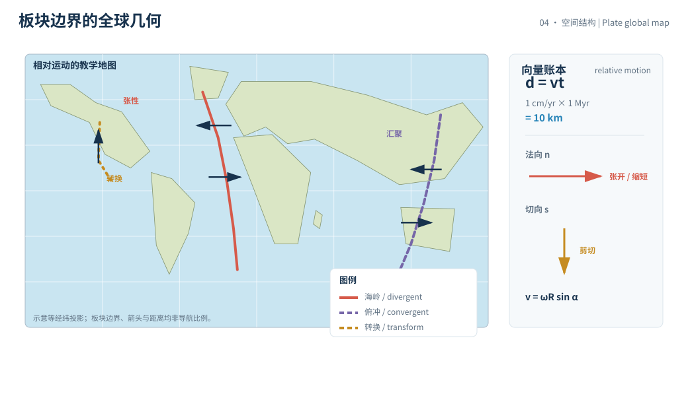
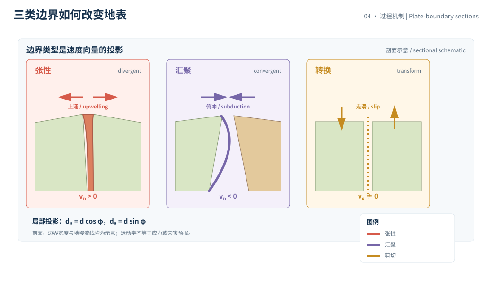

本页目录
深部 II · 板块构造与地幔对流
板块构造的关键不是记住几条边界名称，而是把“相对运动”写成向量、时间和边界条件。厘米每年的慢位移累积到百万年会变成山脉、洋盆和断层带的几何，但几何累积不等于每一步都以刚体方式发生。
学习层：把板块的箭头变成位移账本
1. 具体情境：两块板之间的测量线正在变长吗
在一条跨越海岭或断层的测量线上，两个 GNSS 点的长期位置发生了相对变化。地质学家需要判断：这条边界是在张开、缩短，还是主要剪切？如果把当前速度延长到更长时间，几何位移会达到什么数量级？
实验中的速度和时间是教学设定，不是实时 GNSS 解算，也不指向某一条实际板块边界。真实速度必须附观测窗口、参考框架、站点筛选、模型误差和核验日期。
2. 揭示前预测：同一速度，边界类型改变什么
先不看图，写下三项预测：
- \(1\ \mathrm{cm/yr}\) 累积 \(1\ \mathrm{Myr}\) 大约是多少千米？
- 在速度和时间固定时，张性、汇聚和转换边界的总相对位移大小是否改变？改变的主要是什么？
- 同一刚性板块上，离 Euler 旋转轴越远的点，线速度更大还是更小？
提交后，实验把“位移长度”和“边界方向”分开显示。箭头代表相对运动的教学投影，不把某个瞬时矢量直接当成未来必然路径。
3. 公式桥：线速度、角速度和边界运动
匀速近似下，位移就是
单位换算给出板块学最有用的心算刻度：
若把板块先视为球面上的刚体，Euler 运动写成
其大小随点到旋转轴的角距离 \(\alpha\) 变化，近似为 \(v=\omega R\sin\alpha\)。在局部小范围内，边界法向位移可记为
其中 \(\phi\) 是相对速度与边界法向的夹角；\(d_n\) 表示张开或缩短，\(d_s\) 表示剪切。实验把三种边界用符号标签表示，实际应变还要考虑断层几何、锁固、弹性加载和分布式变形。
数量级上，\(1\)–\(10\) cm/yr 在 \(1\) Myr 内对应约 \(10\)–\(100\) km，在 \(10\) Myr 内对应约 \(100\)–\(1000\) km。这个尺度解释了洋中脊、俯冲带和走滑断层为何能在地质时间中重塑地表；它不说明某个灾害的发生日期。
4. 互动实验：速度、时间和边界方向联动
无 JavaScript 时的静态 fallback：教学设定为相对速度 \(v=5.0\) cm/yr、时间 \(t=2.0\) Myr、地球半径代理 \(R=6371\) km，边界类型为张性。位移 \(d=100.0\) km，若把它视为球面小弧，则角位移约 \(0.899\)°；张性边界的法向分量取 \(+100.0\) km，剪切分量为 \(0\)。
| 账本项 | 默认结果 | 单位 / 解释 |
|---|---|---|
| 相对速度 \(v\) | 5.0 | cm/yr，教学相对运动 |
| 累积时间 \(t\) | 2.0 | Myr，匀速积分窗口 |
| 相对位移 \(d\) | 100.0 | km |
| 球面角位移 | 0.899 | °，小弧近似 |
| 法向位移 | +100.0 | km，张开代理 |
| 剪切位移 | 0.0 | km，边界投影 |
切换为汇聚会把法向符号翻转，切换为转换会把位移放到剪切列；这不是三种边界的完整动力学模型。
5. 边界：运动学不是动力学，更不是灾害预报
- 刚体假设有限：板块内部可能有地震周期、火山、裂谷和塑性变形；把所有位移集中到一条无限薄边界，会忽略分布式应变。
- 速度不是永恒常数：俯冲耦合、地幔黏度、冰后回弹、地形负荷和边界条件都能改变速度；长期重建还需要磁条带、热点、地质构造和古地磁证据。
- 相对运动不等于应力大小：应力还取决于摩擦、有效法向应力、孔隙流体、几何和加载历史；同样的速度可以在不同边界产生不同的地震行为。
- 边界名称是几何摘要：自然边界常同时有张性、汇聚和剪切分量，三分类便于入门，却不是全部状态空间。
因此，板块箭头可以约束“发生了怎样的相对位移”，不能单独给出地震时间、震级或未来海岸线的确定预言。
6. 迁移：从板块向量到地球系统反馈
把同一运动学账本带到山脉抬升、侵蚀、碳酸盐埋藏和火山脱气，就会看到“慢的几何”如何连接到更快的风化和气候通量。关键仍是先分离位移、通量和反馈的时间尺度。
迁移题：若某地同时有法向张开和走滑分量，为什么只报告“边界速度”不够？若 GNSS 短期速度受到地震周期影响，怎样用时间序列、参考框架和独立地质证据避免把弹性加载当成永久板块运动？


1. 海岭、俯冲带和转换断层
海岭处新洋壳形成并向两侧扩张，俯冲带把一块岩石圈送入深部，转换断层主要容纳横向相对运动。它们都是表面运动的几何描述，背后动力涉及热浮力、板块重力、地幔黏滞流动和界面摩擦，不能把“板块被传送带推着走”当成单一机制。
2. 绝对运动与相对运动
两个板块之间的速度是相对量；相对于地球质心、热点参考框架或某个 GNSS 参考框架的速度则是绝对运动的不同表达。做合并时，必须统一坐标、时间窗口、速度定义和不确定度。
刚体球面模型的好处是把全球运动压缩成 Euler 极和角速度，代价是无法表示板块边缘和内部的复杂应变。运动学反演往往有多个可行解，需要更多边界、地质和地球物理约束。
3. 证据与动态数据
板块速率可以来自 GNSS、海底磁异常、地震机制解、海底年龄和古地磁。任何当前测量值都应标出观测年份或窗口、参考框架、处理版本和核验日期；长期平均值也不能直接冒充今天的实时速度。
USGS 的板块构造与地震危险性资料、NASA 的地球观测资料，以及地球物理学会的测地学文档，是查机制和数据定义的优先入口。本页实验不读取实时站点数据。
4. 画向量时的三个检查
第一，确认箭头是相对于谁的速度；第二，把边界法向和切向分量分别列出；第三，说明速度是瞬时、年平均还是地质时期平均。若只保留箭头长度，方向和参考系的错误会被图形掩盖。
还要检查长度尺度：局部断层的几毫米至厘米位移、板块的厘米每年运动和百万年尺度的洋盆宽度，不能放在同一比例尺上直接判断。跨尺度时必须写换算式和积分窗口。
若边界被锁固，测到的位移可能先储存在弹性应变中，直到地震或缓滑释放；因此短期速度、地质长期平均和单次事件位移要分开报告。这个时间结构正是运动学向动力学过渡的入口。
5. 小结
板块构造的最小闭环是“相对速度 → 单位换算 → 边界投影 → 长期几何 → 动力学边界”。下一章把板块运动产生的岩石带进循环：熔融、结晶、抬升、风化和再埋藏怎样重新分配物质与元素？